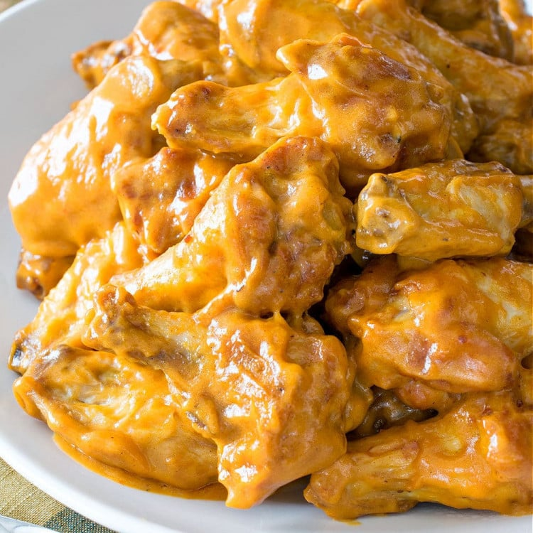

Chicken Wings
Here is a recipe for chicken wings!

Description
With a sweet and tangy base from the sweet baby ray's barbecue sauce
you'll be craving more. The mustard might seem like an odd choice in a wing sauce
but the tanginess from it creates a very unique taste from another world.
My wings are to die for!
Ingredient List
- 1lb bag of chicken wings
- Sweet Baby rays honey bbq sauce
- Honey
- Dijon Mustard
- Lemon pepper seasoning
Steps
- Season the wings to your liking. I like using Lemon Pepper
- Air fry the wings at 400F for about 25 minutes or until golden and crispy
- Create the sauce using the ingredients from above. Mix well then toss the wings in the sauce mixture.
- After tossing the wings in the sauce, finish with a topping of the lemon pepper seasoning to taste.
Back